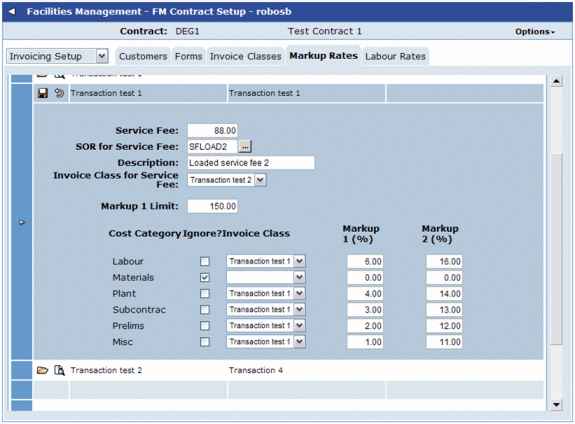

Service fees are automatically applied when creating a
A SOR item will be created from the service fee details held on the relevant mark-up record.
Service fees are set up in Markup Rates which can be found under FM

The SOR item will be created on the